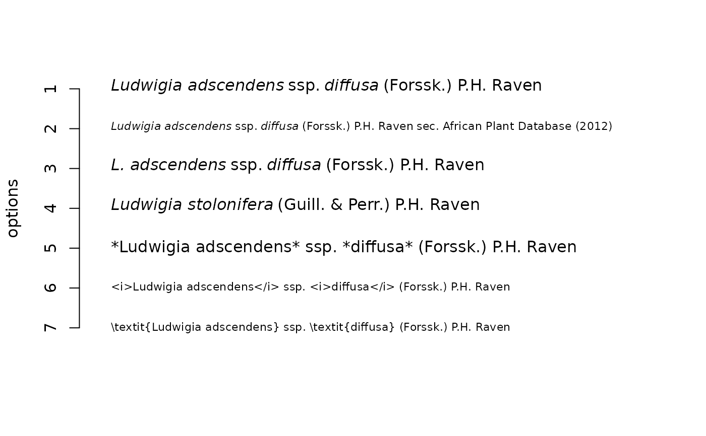

When writing on bio-diversity, usage names could be automatically inserted in
documents including the typical italic format for different elements of a
scientific name.
The function print_name can be applied either in markdown documents or
for graphics.
In Rmarkdown documents use *Cyperus papyrus* L. for
inserting a formatted a species name.
Usage
print_name(object, ...)
# S3 method for class 'character'
print_name(
object,
second_mention = FALSE,
style = "markdown",
isolate = c("var.", "ssp.", "subsp.", "f.", "fma."),
trim = c("spp.", "sp.", "species"),
italics = TRUE,
collapse,
...
)
# S3 method for class 'taxlist'
print_name(
object,
id,
concept = TRUE,
include_author = TRUE,
secundum,
style = "markdown",
italics = TRUE,
collapse,
...
)Arguments
- object
An object of class taxlist.
- ...
Further arguments passed among methods.
- second_mention
Logical value, whether the genus name should be abbreviated or not.
- style
Character value indicating the alternative format for italics. The available options are
"markdown"(called within Rmarkdown documents),"html"(for documents rendered into html files),"expression"(used for labels in graphics), and"knitr"(format in LaTeX code).- isolate
A character vector with words (usually abbreviations) appearing in the middle of scientific names, which are not formatted in italics.
- trim
A character vectors with words appearing at the end of scientific names that are not formatted in italics, either.
- italics
A logical value indicating whether the names should be italized or not.
- collapse
A character value or vector used to collapse the names and passed to
paste0(). If its lenght is 2, the second value will be used to connect the two last names. Note that collapse is not yet implemented forstyle = "expression".- id
Integer containing either a concept or a name ID.
- concept
Logical value, whether
idcorresponds to a concept ID or a taxon usage name ID.Logical value, whether authors of the name should be mentioned or not.
- secundum
Character value indicating the column in slot
taxonViewsthat will be mentioned as secundum (according to).
Examples
## Example subspecies
summary(Easplist, 363, secundum = "secundum")
#> ------------------------------
#> concept ID: 363
#> view ID: 1 - African Plant Database (2012)
#> level: subspecies
#> parent: 362 Ludwigia adscendens (L.) H. Hara
#>
#> # accepted name:
#> 363 Ludwigia adscendens ssp. diffusa (Forssk.) P.H. Raven
#>
#> # synonyms (3):
#> 50037 Ludwigia stolonifera (Guill. & Perr.) P.H. Raven
#> 52001 Jussiaea stolonifera Guill. & Perr.
#> 53744 Jussiaea repens auct.
#> ------------------------------
## Empty plot
plot(x = NA, xlim = c(0, 5), ylim = c(7, 1), bty = "n", xaxt = "n", xlab = "",
ylab = "options")
## Accepted name with author
text(x = 0, y = 1, labels = print_name(Easplist, 363, style = "expression"),
pos = 4)
## Including taxon view
text(x = 0, y = 2, labels = print_name(Easplist, 363, style = "expression",
secundum = "secundum"), pos = 4, cex = 0.7)
## Second mention in text
text(x = 0, y = 3, labels = print_name(Easplist, 363, style = "expression",
second_mention = TRUE), pos = 4)
## Using synonym
text(x = 0, y = 4, labels = print_name(Easplist, 50037, style = "expression",
concept = FALSE), pos = 4)
## Markdown style
text(0, 5, labels = print_name(Easplist, 363, style = "markdown"), pos = 4)
## HTML style
text(0, 6, labels = print_name(Easplist, 363, style = "html"), pos = 4,
cex = 0.7)
## LaTeX style for knitr
text(x = 0, y = 7, labels = print_name(Easplist, 363, style = "knitr"), pos = 4,
cex = 0.7)
